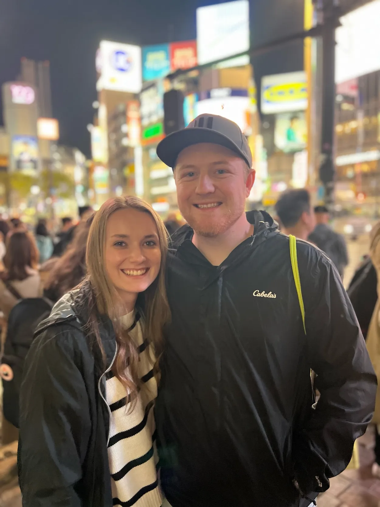

My name is Dallas McCool. I am originally from southern Idaho and now live in northwest Arkansas. I have been married for 6 years to my wife, Mary. We have twin daughters that are three years old, and a baby boy who was born in January. I love to travel, my favorite place I have been is Japan. I think my favorite area to travel to is southeast Asia, as I also loved going to Thailand. Some of the places I haven't been to yet that are at the top of my list are: Egypt, Israel, UK, Greece, Cambodia, Vietnam, South Korea, and Italy. My favorite part of traveling is trying the different foods that are unique to the country or area.
About Me
Arkansas
Arkansas is a state in the southern region of the United States. It contains the Ozark Mountains in the north and the capital is Little Rock. It is home to Hot Springs National Park, the only national park in the state.